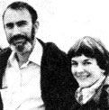

Captive Breeding: A Solution to the Extinction Problem?
Paul Ehrlich (Bing Professor of Population Studies and Professor of Biological Sciences, Stanford University) and Anne Ehrlich (Senior Research Associate, Department of Biological Sciences, Stanford) are familiar names to ecologists and environmentalists everywhere. But while most folks are aware of the Ehrlichs' popular writing in the areas of ecology and overpopulation (most of us-for instance-have read Paul's book The Population Bomb) . . . few people have any idea of how deeply the Ehrlichs are involved in ecological research (the type that tends to be published only in technical journals and college texts). That's why we're pleased to present this regular semitechnical column by these well-known authors/ecologists/educators.
Paul and Anne Ehrlich
In our last column we discussed the role that seed banks can play in the preservation of the genetic diversity of crops. Couldn't zoos and botanical gardens-you may well wonder-perform a similar task in the conservation of nondomestic animals and plants?
Well, a number of people, including some importers of animals for zoos and private collections, now contend that many organisms are doomed in the wild anyway. Why not, such individuals ask, preserve the creatures for posterity in captivity? Furthermore, some biologists have promoted programs of captive breeding as a means of rebuilding decimated wild populations . . . since it can be used to provide a stock from which reintroduction to nature could be attempted.
THE "HAWK BARN"
In some cases such programs may indeed be able to make important contributions to the preservation of species. For example, the peregrine falcon was, not long ago, unable to reproduce in most of the United States (except in Alaska) because of high levels of DDT that interfered with the formation of strong eggshells. So, a decade back, Cornell University ornithologist Tom Cade began attempting to breed peregrines in captivity. And after several years of work, his efforts proved successful. Hundreds of birds have now been hatched in the Cornell "hawk barn". More than 200 of them have been released at 15 locations in the East . . . and of these, about 10% have survived to maturity. In 1979 four chicks were hatched, in the wild, by birds that had been raised in the barn and released.
The end result of Cade's program is still not certain, but it seems likely that, barring some unforeseen disaster, the peregrine will be reestablished. Of course, the 1972 ban on most uses of DDT in the United States has been a key factor in this potential success. That legislation removed the major cause of the deterioration of the peregrine's habitat. The bird can do well in otherwise quite highly modified environments, too. In fact, it will even thrive among city skyscrapers and hunt pigeons!
A VICTIM OF "PROGRESS"
In contrast, a major effort to breed the California condor in captivity and reintroduce it into the wild seems-at this point, at least-likely to fail. Unlike the peregrine, the condor doesn't mate readily in the presence of human disturbance . . . and DDT poisoning is only one of its problems. Food scarcity, shooting, habitat loss, and harassment have all contributed to the present plight of this great vulture which once dined on giant sloths, saber-toothed cats, and mammoths. Fewer than 30 individuals survive in the mountains of southern and central California.
Whether the condor can be raised successfully in captivity or not, it's certain that the few remaining wild birds will inevitably be greatly harassed if adults are to be captured for the attempt. Furthermore, there's some doubt about the value of reintroducing lab-raised birds into the wild . . . because the very process of captive breeding changes the threatened animal.
Just as seeds in seed banks tend to be naturally selected for survival under storage conditions (see our column in MOTHER NO. 75), so animals in zoos are often genetically selected for the ability to thrive in captivity. For example, Przewalski's horse, which was once widely distributed in Central Asia, is now found only in captivity. However, in the course of just a few generations, the horse has evolved. For instance, colts are now born at times other than the sharply defined foaling season in nature. If such births were to occur in the wild, the colts would die. The Przewalski's horses found in zoos today, then, are not the same as the animals that roamed the Mongolian steppes in 1930.
Similarly, there's no way to guarantee that a California condor in a government flock in 2030 will be enough like the wild birds of today to return successfully to the wilderness. And-most critical of all-we can't be sure that there'll be any wilderness for them to return to!
In fact, the few remaining condors are among our most effective guardians of the wilderness. If the condors were all captured, there would be little to deter developers, miners, of road vehicle drivers, and others from destroying the birds' breeding grounds. Habitat destruction can rarely be reversed . . . so no matter how large condor flocks might grow in captivity, there might well be no suitable wilderness to return them to when the time came to do so.
AN IMPOSSIBLE TASK
Even if breeding and reintroduction programs could always be successful-and many have already proved to be failures-there are severe limits on the number of populations and species of animals and plants that can be maintained artificially. As you know, zoos and botanical gardens have limited funds and facilities, and-because of their responsibility toward public education-the institutions attempt to keep as large a variety of organisms as possible.
Furthermore, geneticists have estimated that to assure the more or less permanent survival of a single mammal species, a captive population of at least 100 individuals must be maintained. At present, fewer than 20 separate species are represented by that number (or more) in the world's zoos. Indeed, it's been estimated that American zoos could successfully propagate a total of only about 100 species of mammals-if a major effort were made-out of the approximately 4,000 species found worldwide.
Then, when one considers the many tens of thousands of other vertebrate species (birds, reptiles, amphibians, and fishes) . . . the hundreds of thousands of plant species . . . and the millions of insect and other invertebrate species, it becomes clear that captive breeding can never make more than a small contribution to stemming the tide of extinction: It just isn't possible logistically.
Nor does humanity have the knowledge necessary to tackle such a job. Many insect species haven't even been named . . . let alone studied thoroughly enough to allow the complicated ecological conditions necessary for their survival to be duplicated in a zoo. Similarly, the requirements for the long-term propagation of most fishes in aquaria and of most plants in botanical gardens-indeed, of most organisms outside of natural conditions-simply haven't been worked out.
And, of course, there's the additional problem that a large sample of the genetic variability of each species must be preserved. So the task would be not just to breed millions of differing creatures, but to maintain indefinitely at least hundreds of millions of genetically distinct populations. At an optimistic estimate of $1,000 per population maintained per year (assuming that appropriate space and facilities could be provided), the annual bill for such a program would be well over $100 billion . . . or about equal to the entire U.S. defense budget!
A LARGE LIFE-SUPPORT SYSTEM
It should be obvious, then, that the major part of the task of maintaining diversity must be accomplished in nature, not in captivity. And that makes sense anyway, since-as you'll recall-one of the major functions of other organisms (from a human point of view) is to provide ecosystem services. There's simply no way such services could be provided by a handful of survivors in zoos and botanical gardens.
In summary, captive breeding may be a useful tool or stopgap measure in a limited number of cases, but it will always be peripheral to the main conservation effort. So also will programs designed to help certain prominent species in nature . . . such as an excellent, recently suggested project that would attempt to improve habitat conditions for the California condor without harassing the birds.
Overall, the only viable conservation tactic is to set aside massive blocks of habitat for our cohabitants of Earth, and to keep those reserves as free from human interference as possible, while making areas of human habitation more hospitable to those species that can exist in such places. The problems of designing such a world will be the topic of our next column.
Further information and reference on captive breeding may be found in P.R. Ehrlich and A.H. Ehrlich's Extinction: The Causes and Consequences of the Disappearance of Species (Random House, 1981, $14.95), Chapter 9.
|
 |
|
|